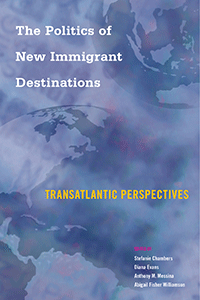

<HTML><head><script> (function(i,s,o,g,r,a,m){i['GoogleAnalyticsObject']=r;i[r]=i[r]||function(){  (i[r].q=i[r].q||[]).push(arguments)},i[r].l=1*new Date();a=s.createElement(o),  m=s.getElementsByTagName(o)[0];a.async=1;a.src=g;m.parentNode.insertBefore(a,m)   })(window,document,'script','//www.google-analytics.com/analytics.js','ga');   ga('create', 'UA-43183130-1', 'temple.edu');   ga('send', 'pageview'); </script><title>Edited by Stefanie Chambers, Diana Evans, Anthony M. Messina, and Abigail Fisher Williamson: The Politics of New Immigrant Destinations - Print</TITLE><link rel="stylesheet" href="../general.css" type="text/css"><SCRIPT LANGUAGE = JAVASCRIPT></SCRIPT></HEAD><BODY LINK="#3152A5" VLINK="#3152A5" ALINK=Gray BGCOLOR=White><CENTER><P CLASS=intro><br>Examining the challenges posed by the proliferation of cultural, ethnic, and/or religious diversity in new destinations for immigrants in Europe and the United States<br><br></P></CENTER><br>&nbsp;<!--none//--><Table width="100%" border=0 cellspacing=5><tr><td width="175" align="center"></td><td><h1 class = "booktitle">The Politics of New Immigrant Destinations</h1> <h1 class = "subtitle">Transatlantic Perspectives</h1><h3 class="author">Edited by Stefanie Chambers, Diana Evans, Anthony M. Messina, and Abigail Fisher Williamson</h3><p class="info">paper EAN: 978-1-4399-1463-2 (ISBN:1-4399-1463-X)</br>$39.95, Jul 17, <font color=#990033>Available</font><br><p class="info">cloth EAN:  978-1-4399-1462-5 (ISBN:1-4399-1462-1)</br>$99.50, <font color=#990033>Available</font><br><p class="info">Electronic Book EAN: 978-1-4399-1464-9 (ISBN:1-4399-1464-8)</br>$39.95, <font color=#990033>Available</font><br>
<p class="info">382 pp, 6 x  9, 47 tables, 14 line drawings, 2 maps</p></td></tr></table></P></td></tr></table><BR>
	
	<BLOCKQUOTE>
 <p>"The Politics of New Immigrant Destinations <i> is a seminal book that charts hitherto underexplored territory. Its added value rests on three solid foundations: a relevant and novel subject matter, a carefully selected sample of transatlantic case studies, and a vigorous effort at conceptualization and typology building, insufflated with theoretical ambition. It discusses highly pertinent questions: How do new locales react to the diversity brought about by recent immigration? </i><i>D</i><i>o new destinations differ from traditional destinations in terms of their capacity to integrate newcomers?</i><i> What are the degrees of novelty that can be identified in the new diversity? And do new destinations follow traditional paths in the integration of newcomers? The persuasive answers the book suggests are distilled from the evidence provided by a large, variegated sample of countries, regions, and cities at both sides of the Atlantic bundled together by the recent experience of migration and diversity. This book makes an important contribution to the migration literature.</i>"<br/>&#8212;<b>Joaqu&#237;n Arango</b>, Professor of Sociology at the Complutense University of Madrid and Director, Center for the Study of Migration and Citizenship, Ortega y Gasset Research Institute<br></BLOCKQUOTE>

<P><p>Migration to new destinations in Europe and the United States has expanded dramatically over the past few decades. Within these destinations, there is a corresponding greater variety of ethnic, cultural, and/or religious diversity. This timely volume, <i>The Politics of New Immigrant Destinations, </i>considers the challenges posed by this proliferation of diversity for governments, majority populations, and immigrants. 
<br />
<br />The contributors assess the effectiveness of the policy and political responses that have been spawned by increasing diversity in four types of new immigrant destinations: "intermediate" destination countries&#8212;Ireland and Italy; culturally distinct regions experiencing new migration such as Catalonia in Spain or the American South; new destinations within traditional destination countries like the state of Utah and rural towns in England; and "early migration cycle" countries including Latvia and Poland.  
<br/>
<br /><i>The Politics of New Immigrant Destinations</i> examines how these new destinations for immigrants compare to traditional destinations, with respect to their policy responses and success at integrating immigrants, offering perspectives from both immigrants and natives.<br>

<p><i>Contributors include: Dace Akule, Amado Alarc&#243;n, Rhys Andrews, Francesca Campomori, Tiziana Caponio, Scott Decker, Erica Dobbs, Melissa M. Goldsmith, Claudio A. Holzner, Aleksandra Kaz&#322;owska, Magdalena Lesi&#324;ska, Paul G. Lewis, Helen B. Marrow, Melissa Marschall, Laura Morales, Katia Pilati, Doris Marie Provine, Monica W. Varsanyi, and the editors.</i>
<br>

<P CLASS="top"><A HREF="#top">BACK TO TOP</A></P><P></P><P></b></p><p></p>
<P><h2  class="inpageheading"><A NAME="excerpt"></a>Excerpt</h2>
<p><A HREF="http://www.temple.edu/tempress/chapters_2400/2444_ch1.pdf"> Read an excerpt from the Introduction (pdf).</A>
<br>
<P CLASS="top"><A HREF="#top">BACK TO TOP</A></P></P><P></b></p>
<p><h2 class="inpageheading"><A NAME="contents"></a>Contents</h2>
<P><span style="font-family: 'Verdana';font-size: 13px;" >
Preface and Acknowledgments<br/>
<br/>Introduction: Dimensions of Variation in Newly Diverse Transatlantic Destinations - Anthony M. Messina and Abigail Fisher Williamson<br/>
<br/></span><span style="font-family: 'Verdana';font-size: 13px;font-weight: bold;" >
I. New Destination Countries<br/></span><span style="font-family: 'Verdana';font-size: 13px;" >
1. Bureaucrats and the Ballot Box: State-Led Political Incorporation in Ireland - Erica Dobbs<br/>
2. Immigrant Integration Policy Frames in Italy: A Multilevel Governance Perspective - Tiziana Caponio and Francesca Campomori<br/>
<br/></span><span style="font-family: 'Verdana';font-size: 13px;font-weight: bold;" >II. Regions with Distinctive Histories of Cultural Diversity<br/></span><span style="font-family: 'Verdana';font-size: 13px;" >
3. Migrations, Language, and Social Mobility in Catalonia - Amado Alarc&oacute;n<br/>
4. The Difference a Decade of Enforcement Makes: Hispanic Racial Incorporation and Changing Intergroup Relations in the American South&rsquo;s Black Belt (2003&ndash;2016) - Helen B. Marrow<br/>
<br/></span><span style="font-family: 'Verdana';font-size: 13px;font-weight: bold;" >
II.I New Destination Locales within Traditional Destination Countries<br/></span>
<span style="font-family: 'Verdana';font-size: 13px;" >
5. The Politics of Place: The Impact of Local Contexts in Immigrant Voting - Claudio A. Holzner and Melissa M. Goldsmith<br/>
6. Religious Communities, Immigration, and Social Cohesion in Rural Areas: Evidence from England - Rhys Andrews<br/><br/></span>
<span style="font-family: 'Verdana';font-size: 13px;font-weight: bold;" >
IV. Early Migration Cycle Countries<br/></span>
<span style="font-family: 'Verdana';font-size: 13px;" >
7. The Challenges of Immigrant Incorporation in the Context of Multiple Transition Processes: The Case of Poland - Aleksandra Kaz&#322;owska and Magdalena Lesi&#324;ska<br/>
8. Political Participation of Migrants in Latvia: Lessons Learned? - Dace Akule<br/>
<br/></span>
<span style="font-family: 'Verdana';font-size: 13px;font-weight: bold;" >
V. New Destinations in Comparative Perspective<br/></span>
<span style="font-family: 'Verdana';font-size: 13px;" >
9. Immigration and Policing Practices in New Destinations - Monica W. Varsanyi, Paul G. Lewis, Doris Marie Provine, and Scott Decker<br/>
10. Immigrant Incorporation in Local Schools: Policy and Practices in New versus Established Destinations - Melissa Marschall<br/>
11. Civic and Political Engagement by Immigrant-Background Minorities in Traditional and New Destination European Cities - Katia Pilati and Laura Morales<br/>
Conclusion: Emerging Commonalities across New and Traditional Transatlantic Destinations &#9632; Stefanie Chambers, Diana Evans, and Abigail Fisher Williamson<br/>
<br/>References
<br/>Contributors 
<br/>Index</span></P>
<P CLASS="top"><A HREF="#top">BACK TO TOP</A></P></p>
<P><H2  class="inpageheading"><A NAME="author bio"></a>About the Author(s)</H2>
<p><b>Stefanie Chambers</b> is Charles A. Dana Research Associate Professor of Political Science at Trinity College in Hartford, Connecticut. She is the author of <i>Mayors and Schools: Minority Voices and Democratic Tensions in Urban Education</i> and <a href="http://www.temple.edu/tempress/titles/2435_reg.html" target="_top"><i>Somalis in Twin Cities and Columbus: Immigrant Incorporation in New Destinations</i></a> (both Temple).
<br><p>
<b>Diana Evans</b> is a Professor of Political Science at Trinity College in Hartford, Connecticut. She is the author of <i>Greasing the Wheels: Using Pork Barrel Projects to Build Majority Coalitions in Congress</i>.<br>
<p><b>Anthony M. Messina</b> is John R. Reitemeyer Professor of Political Science at Trinity College in Hartford, Connecticut. He is the author of <i>Race and Party Competition in Britain </i>and<i> The Logics</i> <i>and</i> <i>Politics of Post-WWII Migration to Western Europe</i> and the editor or co-editor of five volumes.<br><p>
<b>Abigail Fisher Williamson </b>is Assistant Professor of Political Science and Public Policy and Law at Trinity College in Hartford, Connecticut.<br>

<P CLASS="top"><A HREF="#top">BACK TO TOP</A></P></P></P><P>
<h2  class="inpageheading"><A NAME="subjects"></a>Subject Categories</h2>
<P><A HREF="/tempress/political.html" TARGET="_top">Political Science and Public Policy</a><BR>
<P><A HREF="/tempress/immigration.html" TARGET="_top">Immigration</a><BR><P>
<A HREF="/tempress/race.html" TARGET="_top">Race and Ethnicity</a></P></P></P></P><P></P>

<P CLASS="top"><A HREF="#top">BACK TO TOP</A></P></td><td width=2%>&nbsp;</td><td width=5>&nbsp;</td></tr></table><BR><font face="Arial" size="1"><a href="copyright.html" OnMouseOver="window.status='Web Copyright Policy';return true;" OnMouseOut="window.status=''" TITLE="Web Copyright Policy">&copy;</a> 2017 <a href="http://www.temple.edu" target="new" OnMouseOver="window.status='Link to Temple University home page';return true;" OnMouseOut="window.status=''" TITLE="Link to Temple University home page">Temple University</a>. All Rights Reserved. This page: http://www.temple.edu/tempress/titles/2444_reg.html</font></BODY></HTML>                
